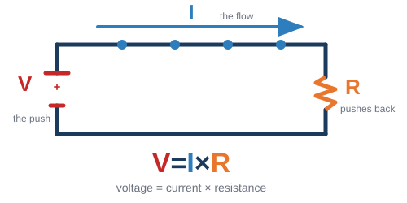
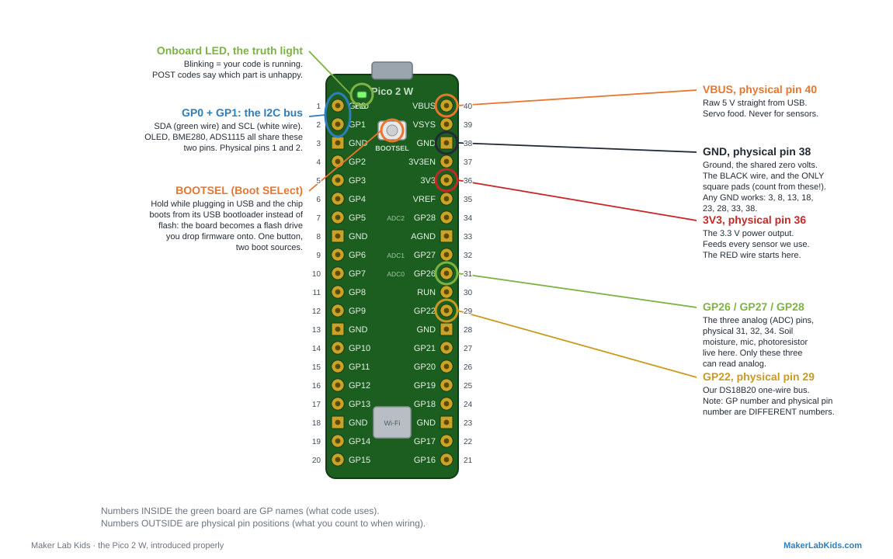

Glossary
Every word we use in the workshop, in plain language. When someone says a term you don't know, it's on this page. Start with the basics below.
The absolute basics
- Microcontroller
- A tiny, cheap, complete computer on a single chip. It does one job, instantly, forever. Our one is the Pico 2 W ("Pico" for short), about $8, and it has WiFi built in.
- Program / code
- A list of instructions you write for the computer to follow. "Code" is the same thing: the text you type. Writing code is just writing very precise instructions.
- MicroPython
- The language we write our code in, a version of Python shrunk to run on a tiny computer like the Pico. Friendly, readable, forgiving. You put it on the Pico one time (see firmware, below).
- IDE (we use Viper IDE)
- The place where you write code and press "run." Ours, Viper IDE, runs right in a web browser, nothing to install. (IDE stands for "integrated development environment," a fancy phrase for "code workbench.")
- Run
- Tell the Pico to actually do what your program says, right now. You press Run; things happen.
- File
- A saved piece of code (or text) with a name. Programs live in files, like
main.py. - Upload / install
- Copy a file from your computer onto the Pico. Our one-click "Install" links do this for you.
- Sensor vs. actuator
- A sensor measures the world (heat, light, moisture). An actuator changes it (a servo that moves, a relay that switches something on). A station usually has some of each.
- Dashboard
- The little web page a station serves to show its readings live. You open it on your phone.
Electricity basics
- Voltage (symbol V, measured in volts)
- Electrical pressure, the push. Our logic runs at 3.3 V; USB provides 5 V. Think water pressure in a pipe.
- Current (symbol I, measured in amps, A)
- How much electricity is flowing. Watch the letters: the symbol is I (for "intensity"), but the unit is the amp (A), that mismatch trips everyone up. Small numbers here: an LED sips about 0.01 A (10 mA); a stalled servo can gulp over 1 A.
- Resistance (symbol R, measured in ohms, Ω)
- How hard a part pushes back against the current.
- Ohm's law (V = I × R)
- The one equation that ties them together: voltage (V) equals current
(I) times resistance (R). Push harder (more V) and more current flows;
add resistance and less flows. Rearranged, it is how we size a resistor: pick R so the
current I lands where you want it.

V pushes, I flows, R pushes back. Cover the letter you want and the other two show the formula: V = I×R, or I = V/R, or R = V/I. - Ground (GND)
- The shared zero-volt reference every circuit measures against. Everything on the breadboard connects back to it. Black wire, always.
- Short circuit
- Power connected straight to ground with (almost) nothing in between. Big current, hot parts, sad Pico. The truth light staying dark is often the first clue.
- Open circuit
- The opposite problem: a break somewhere, so no current flows at all. Loose jumper, cold solder joint, probe lead folded over in the breadboard hole.
Parts
- Resistor
- Sets or limits current. Value painted on in color bands: our 4.7k pullup reads yellow-violet-red-gold, our 10k divider resistor reads brown-black-orange-gold.
- Pullup resistor
- A resistor from a signal wire up to 3.3 V that holds the line HIGH when nobody is
talking. The DS18B20 bus needs one (4.7k). A pulldown does the same job toward
ground. Putting the pullup toward ground instead is the classic silent killer.

A pullup in the wild: the banded 4.7k (yellow-violet-red-gold) from the DS18B20 data line up to the 3V3 rail. - Voltage divider
- Two resistors in series splitting a voltage. Our light sensor is one: photoresistor on top, 10k on the bottom, and the middle point's voltage says how bright it is.
- LED
- Light-emitting diode. Has a polarity: long leg to positive, and always with a current-limiting resistor (330 Ω is our habit) or it burns out.
- Photoresistor (LDR)
- A resistor that changes with light: more light, less resistance. Cheap and cheerful (GL5528 in our kit).
- Servo
- A motor that goes to the angle you ask for (0–180°) and holds it. Commanded with PWM pulses. Powered from 5 V, never 3V3; big ones (MG995) get their own supply.
- Relay
- An electrically controlled switch: a tiny signal from the Pico safely switches a much bigger circuit on or off. You can hear it click.
- Sensor vs actuator
- A sensor measures the world (temperature, light, sound). An actuator changes it (servo, relay, buzzer). A station usually has some of each.
- Breadboard
- The plug-in prototyping board. Rows of 5 holes are connected; the long rails down the sides carry power and ground. Watch out: on big boards the rails break in the middle.
- Jumper wires (DuPont wires)
- The pluggable wires. Our color convention, one meaning per color: red = 3V3 power, orange = 5V (VBUS), black = GND, green = data (I2C SDA, the 1-Wire probe bus, and SPI MISO/POCI), white = clock (I2C SCL and SPI SCK), yellow = a lone signal and SPI chip-select (CS), blue = SPI MOSI (PICO, data out from the Pico).
- Multimeter
- The measuring tool: volts, ohms, continuity (the beep mode that tells you two points are connected). When wiring lies, the multimeter tells the truth.
Buses and signals
- Signal wire
- A wire that carries information or a command, not power. A signal is just a voltage that swings HIGH and LOW to mean something: a data line (I2C SDA), a clock (SCL), the pulse that tells a servo its angle (PWM), a button press. Every wire on the board does exactly one of three jobs: carry power (3V3, 5V), carry ground (the shared 0 V), or carry a signal. In our color code a lone signal wire is yellow.
- GPIO
- General Purpose Input/Output: the Pico's programmable pins. Named GP0…GP28. GP numbers are not physical pin numbers: GP22 lives at physical pin 29. Our wiring diagrams show both.
- Digital vs analog
- Digital signals are on/off (HIGH = 3.3 V, LOW = 0 V). Analog signals can be any voltage in between, which is how a moisture probe says "53%".
- ADC
- Analog-to-Digital Converter: reads an analog voltage as a number. The Pico has three ADC pins (GP26/27/28); the ADS1115 chip adds four more over I2C, with better precision.
- PWM
- Pulse Width Modulation: switching a pin on and off fast, where the on-fraction encodes the message. Dims LEDs, and (at 50 Hz with 1–2 ms pulses) commands servos.
- I2C
- A two-wire bus (SDA = data, SCL = clock) that many devices share, each with its own
address: our OLED is
0x3C, BME2800x76/0x77, ADS11150x48. One bus, four wires total, many devices. - I2C address
- A device's house number on the bus. Two devices with the same address can't share
(VL53L0X and VL53L1X both live at
0x29).i2c.scan()lists who is home. - OneWire
- A one-data-wire bus used by DS18B20 temperature probes. Every probe has a unique factory serial number, so dozens can share the same three wires.
- UART / serial
- The classic two-wire send/receive link. Your USB cable carries a serial conversation between the Pico and Viper's terminal.
The Pico itself

- Microcontroller
- A tiny complete computer on one chip that runs exactly one program, instantly, forever. The Pico 2 W's chip is the RP2350, plus Wi-Fi.
- 3V3 pin
- The Pico's 3.3 V power output (physical pin 36). Powers every sensor we use.
- VBUS / VSYS
- VBUS (pin 40) is raw 5 V straight from USB: servo food. VSYS (pin 39) is the Pico's own supply input for battery projects.
- BOOTSEL ("Boot SELect")
- The button that selects where the chip boots from. Held while plugging in
USB, the chip boots from its built-in USB bootloader, which shows up as a flash drive
you drop firmware onto. Untouched, it boots from flash memory: MicroPython and your
main.py. One button, two boot sources. Software can pick the bootloader too:machine.bootloader(), no finger required. - Firmware
- The software that is flashed into the board and lives there: for us, MicroPython v1.28.0. Full story under "Four words, one machine" in the Code words section.
- Flash memory
- The Pico's onboard storage (4 MB) where your files live:
main.py,lib/,placements.json. Survives power-off. - Onboard LED / the truth light
- The little LED on the board, which our programs use honestly: blinking means code is running; POST blink codes (short = OK, long = trouble, one blink per part) say exactly which part is unhappy; dark means nothing is running.
Code words
- Four words, one machine: hardware, firmware, driver, software
- These four confuse everyone, so here is the whole stack at once, bottom to top.
Hardware is the physical stuff: the green board, the chips, the wires. You can drop it on your foot.
Firmware is software that is installed INTO a piece of hardware and lives there, one layer up from the metal. The name is the answer to "why not just call it software": it sits between hardware and software, so it is firm, software by nature, part-of-the-device by residence. It survives power-off, ships with the device, and changes rarely and deliberately (you flash it, you don't edit it). On our Pico the firmware is MicroPython itself: the thing that wakes the chip up and teaches it to understand Python. Flash once, ever.
Driver is a piece of ordinary software with one narrow job: speak the private language of ONE piece of hardware so the rest of your code never has to.lib/bme280.pyknows the BME280's registers, wake-up dance, and math; your program just asks it for a temperature. It is called a driver because it operates the device on your behalf, like a chauffeur: you say where to go, it works the pedals. And the follow-up question, answered: drivers aren't firmware because of where they live, ours are readable files inlib/you can open and change like any code. If we burned them into the chip, they would become part of the firmware. (Fun fact: layers go all the way down. The BME280 sensor has its own tiny factory firmware inside, running its own measurements before our driver ever says hello.)
Software is everything above: the drivers,picolab.py, and your program (main.py), the part you write, edit, break, and fix ten times an hour. Same stuff as firmware chemically; the difference is who installs it, where it lives, and how often it changes.
The stack, bottom to top: hardware (the board) → firmware (MicroPython, flashed in) → drivers (one per device, in lib/) → your program (main.py, the boss). - MicroPython
- Python, shrunk to run on microcontrollers. What every program in this repo is written in.
- REPL
- The
>>>prompt: type a line, the board runs it immediately. The fastest wiring detective there is (i2c.scan()). main.py- The file the board runs automatically at every power-up. Saving your program as main.py is how a project "ships".
- Library / driver
- Ready-made code you import instead of writing. Our
lib/folder holds one driver per sensor pluspicolab.py, the shared fault-tolerance framework. (Driver vs library: a driver is a library whose specialty is one piece of hardware; see the four words.) - Exception / try-except
- How Python reports "that went wrong" and how code survives it. Our house style: a missing sensor never crashes a program; it goes in the POST blinks instead.
- Calibration
- Teaching a sensor the truth: ice water is 0°, boiling is 100°, and the board
stores the correction (
cal.json) and applies it forever after.
Networking words
- Access point (AP) vs station
- An AP hosts a Wi-Fi network (each Pico can host PicoLabN); a station joins one (our mission-control mode joins WormHole). Same radio, two roles.
- IP address
- A device's number on a network, like 192.168.4.1 (a Pico hosting its own AP) or 192.168.8.57 (a station on the classroom router).
- HTTP / webserver
- The language of the web. Our Picos run a tiny webserver: your phone asks for the page, the Pico answers with it.
- JSON
- A simple text format for data that both Python and web pages read natively. Every
station serves its readings as JSON at
/data. - SSID
- Just the fancy name for a Wi-Fi network's name.
At the soldering bench
- Soldering
- Joining metal to metal with melted solder so electricity (and a little strength) flows through the joint. Heat the parts, feed the solder, count two seconds, done.
- Tinning
- Pre-coating a wire or iron tip with a thin layer of solder so the real joint goes fast and clean.
- Flux
- The chemical helper (inside our solder wire) that cleans the metal as you work so solder flows instead of beading up.
- Wetting
- What good solder does: flows smooth and shiny onto both parts, like water on clean glass. A joint that wetted looks like a tiny volcano.
- Cold joint
- A joint that LOOKS attached but never truly bonded: dull, lumpy, cracked. The #1 cause of "it works when I hold the wire". Reheat it properly and it heals.
- Header pins
- The rows of metal pins soldered to boards so they plug into breadboards. Our Picos and OLEDs come pre-soldered; sensors are where you earn your solder badge.
Debugging words
- POST codes
- Power-On Self-Test, borrowed from big computers: our truth light blinks one slot per
part, in order.
. . _ .means part 3 is in trouble. Dark = code not running. - Hot-plug
- Plugging a part in while the program runs. Our demos pick it up within a couple of seconds, no restart.
- Floating pin
- An input connected to nothing, reading random noise. Why an unplugged analog sensor still "reads" something: the pin is guessing.
- Brown-out
- A momentary voltage sag that resets the board. When something draws a big gulp of current, a servo starting or stalling, a motor, a fistful of LEDs, it can dip the shared 5 V or 3V3 rail below what the chip needs, and the Pico reboots (screen blanks, program restarts from the top). The tell: it only misbehaves when the hungry part moves. Cures: give that part its own power supply (share grounds), and/or add a bulk capacitor (470–1000 µF) right next to it to buffer the spike.
- Stall (servo)
- When a servo is told to push past its limit or against something it can't move, it doesn't give up, it keeps pulling maximum current trying. That's the biggest current spike a servo makes and the most common brown-out trigger. Don't command a servo into a hard stop, and give thirsty servos their own 5 V supply.
- Stale library
- An old compiled copy (
.mpy) shadowing a newer.pyafter an update. Symptom: errors right after an install. Cure: delete the old .mpy, reinstall.